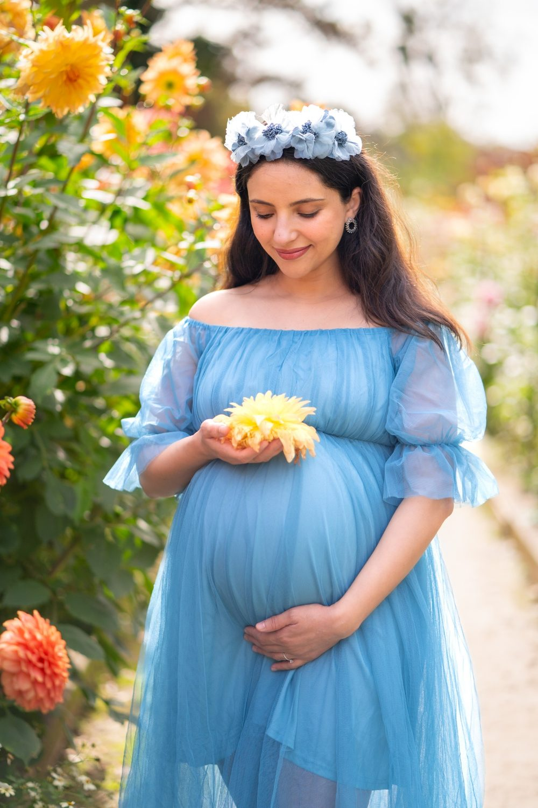
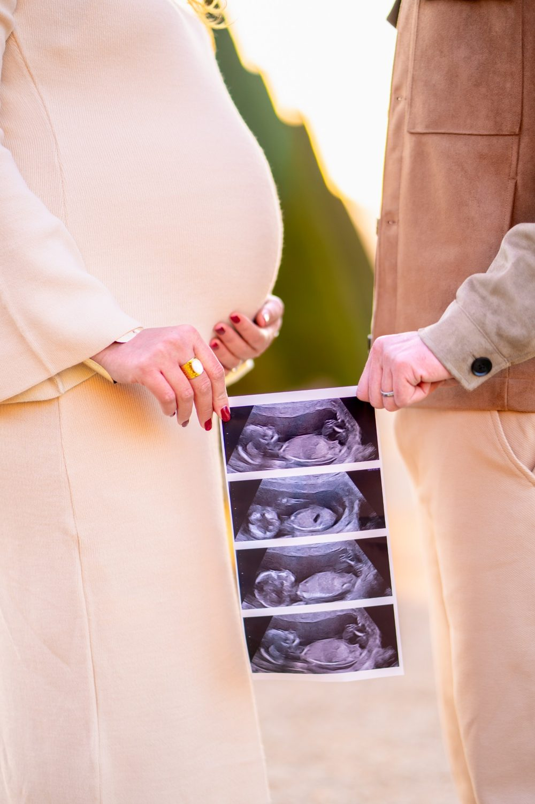
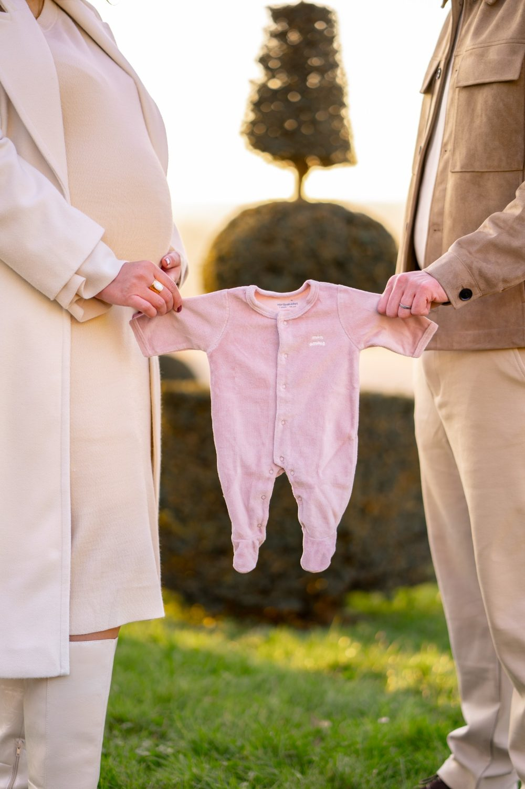
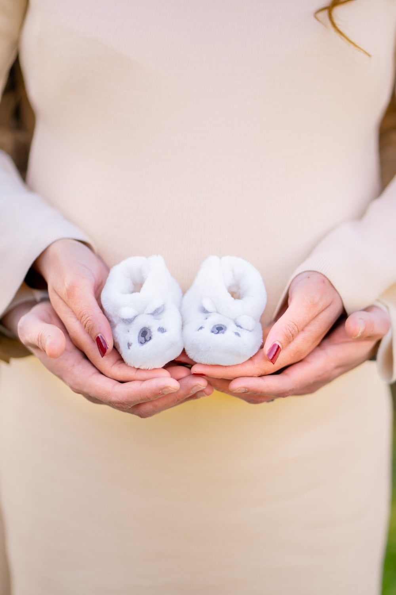
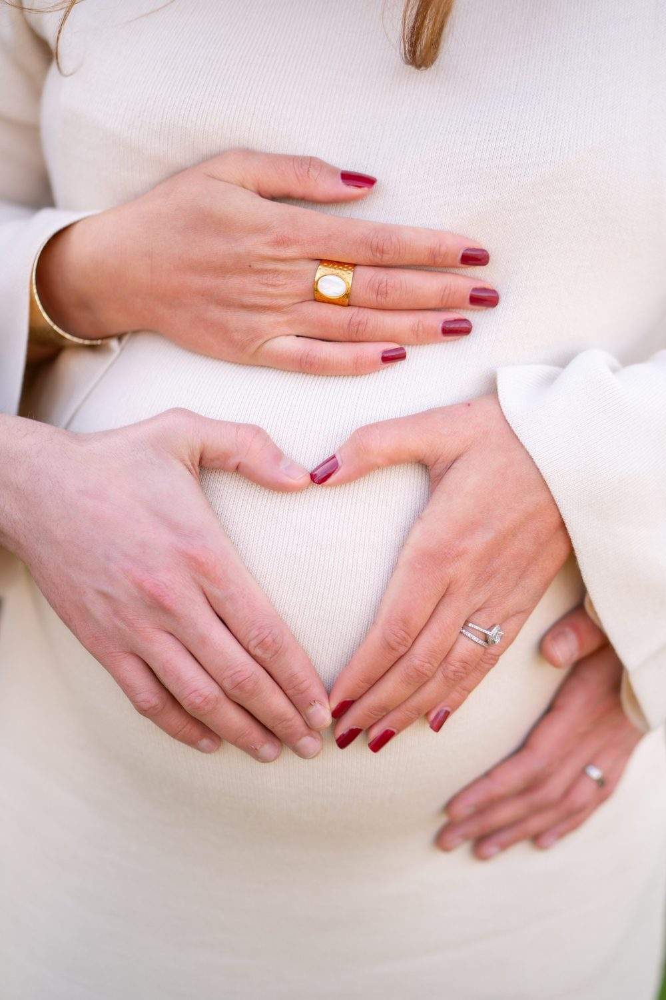

Séance photo grossesse à Enghien-les-Bains
Élégant, au bord de l'eau, avec des villas. Une séance grossesse garde ce temps d'attente, le ventre arrondi, les mains qui se posent dessus, les mots que vous murmurez au bébé. Nous vous proposons de commencer à Lac d'Enghien, puis de poursuivre à Rue de Mora.

Où faire votre shooting
Un shooting grossesse à Enghien-les-Bains se fait au bord du Lac d'Enghien en fin d'après-midi, puis devant l'Établissement thermal pour un portrait plus sobre. À contre-jour, le ventre arrondi se dessine joliment près des jardins. Vous marchez lentement sur la promenade, une main sur le ventre, l'autre dans celle de votre partenaire. La façade classique de l'Établissement thermal accueille un portrait de profil, robe fluide. Quelques secondes au ralenti gardent le mouvement du tissu.
Sur place
Élégant, au bord de l'eau, avec des villas. Le lac est très doux au coucher du soleil.
Nous proposons des portraits en extérieur, en lumière naturelle, ou à domicile pour plus d'intimité. Une courte vidéo met en mouvement les gestes, le regard, la voix d'un parent qui raconte l'attente.
La séance au bord du lac se fait à pied, à votre rythme : prévoyez des chaussures confortables, une bouteille d'eau et des pauses assises. Programmez-la vers le coucher du soleil, la lumière y est plus douce pour la peau et le ventre.
À Enghien-les-Bains, vous êtes à Transilien Enghien-les-Bains : nous préparons l'itinéraire entre les lieux avec vous.
Nos lieux pour cette séance
Lac d'Enghien
Promenade, pédalos et jardins. Une berge ou un plan d'eau pour des portraits lumineux et apaisants.
Rue de Mora
Rue commerçante. Des rues et des façades pour une séance plus urbaine et décontractée.
Casino d'Enghien
Bâtiment Art déco.
Établissement thermal
Façade classique.




Avant de nous écrire
Où faire un shooting grossesse à Enghien-les-Bains ?
Pour un shooting grossesse à Enghien-les-Bains, les jardins et la promenade du Lac d'Enghien offrent de l'espace, des reflets et une lumière douce en fin de journée. Pour un rendu plus architectural, la façade de l'Établissement thermal donne un fond calme.
Quelle tenue porter pour une séance grossesse au bord du lac d'Enghien ?
Pour une séance grossesse au bord du Lac d'Enghien, une robe longue et fluide bouge avec l'air du lac et met le ventre en valeur. Choisissez des matières souples sans élastique serré, et une couche légère : au bord de l'eau, la soirée fraîchit vite.
Comment venir à Enghien-les-Bains ?
Transilien Enghien-les-Bains. Nous nous déplaçons avec notre matériel photo et vidéo.
À quel moment faire la séance photo de grossesse ?
Entre la 28e et la 35e semaine d'aménorrhée en général, quand le ventre est visible et que vous restez mobile.
Parlons de votre mariage
Demander un devisGrossesse ailleurs en Île-de-France
© Le Couple Photographe · Photographe de mariage Paris & Île-de-France · Mis à jour le 10 octobre 2026
Demander un devis